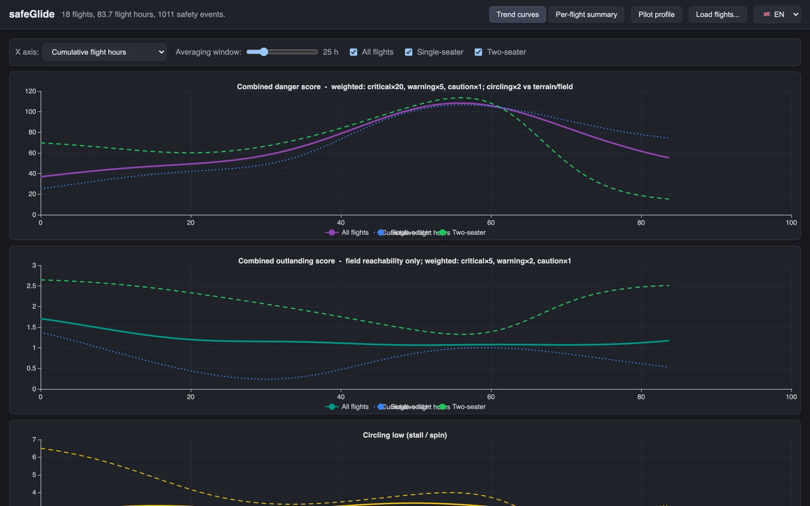
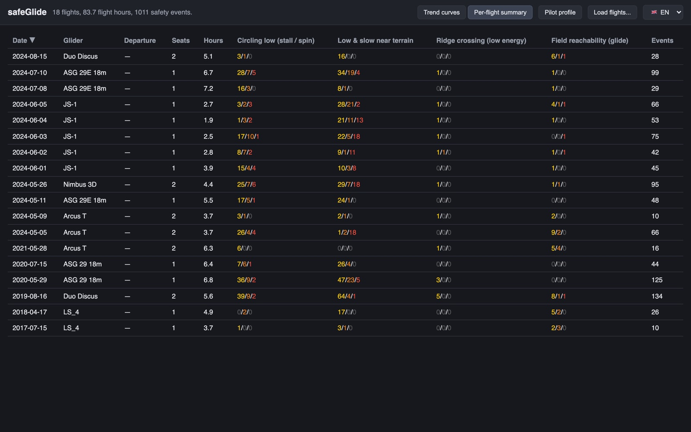
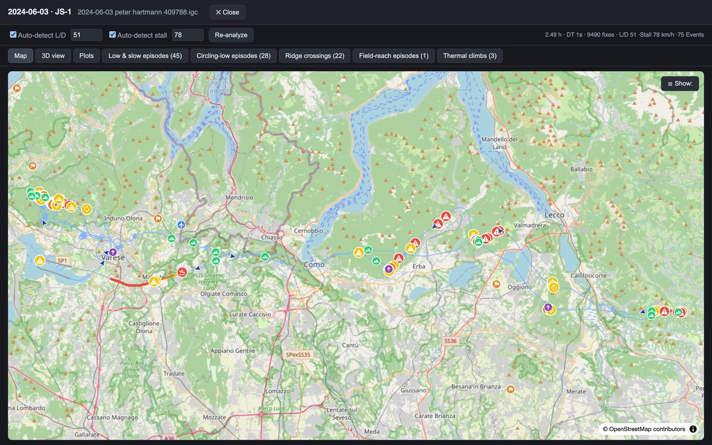
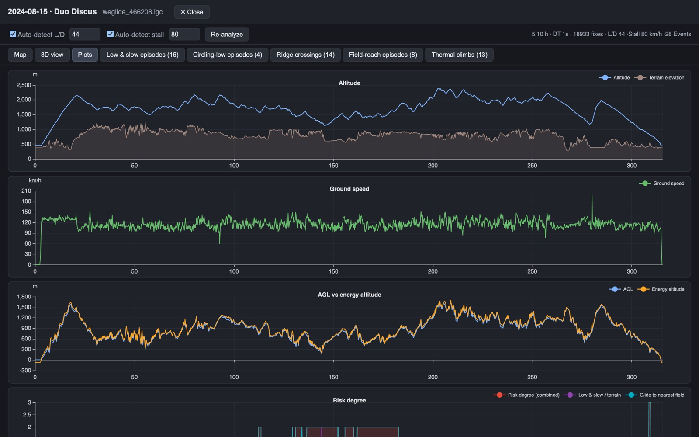
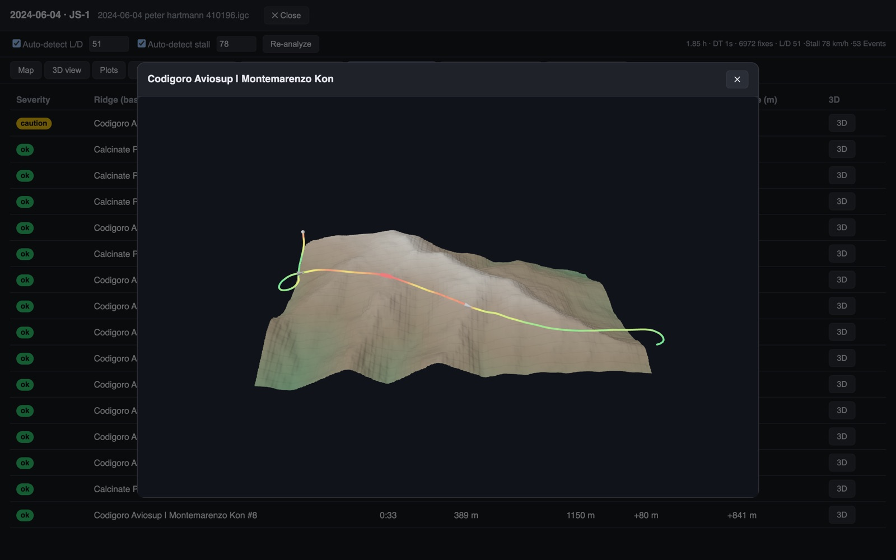
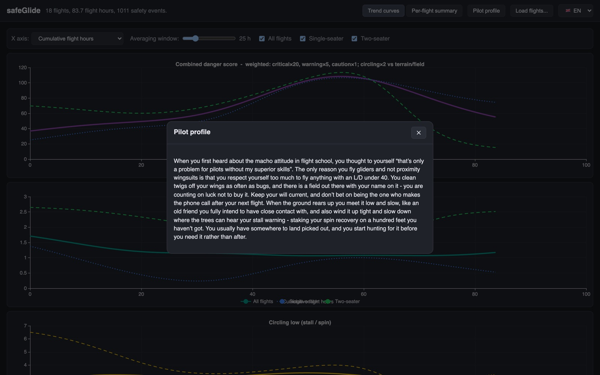

Turn your IGC flight logs into a clear picture of when, where, and how often you flew close to the edge — and how your risk exposure has changed as you gained experience.
No install, no upload. The full analysis engine runs in your browser — your flight logs never leave your machine.
safeGlide is a personal toolkit for soaring pilots that reviews recorded flights for risky flying situations and tracks how your exposure to them evolves over a flying career. Point it at a single flight for a detailed debrief, or at your whole logbook to see the bigger picture.
One IGC file becomes an interactive map, synced altitude/speed/risk plots, a 3D terrain replay, and a table of every flagged episode and thermal climb.
Every event from every flight, smoothed into rate curves over your accumulated flight hours — so you can see whether experience is actually making you safer.
SRTM elevation, a database of landable fields, and a ridge database derived from watershed analysis let the model reason about terrain clearance, ridge crossings and glide range.
The same Swift analysis engine powers the browser app (compiled to WebAssembly), the macOS trends app, and the in-flight iOS cockpit companion — verified numerically identical.
Real screenshots, real flights. Everything below is one click away in the web app.

Your whole logbook condensed into a handful of honest curves.

Every flight on one line: date, glider, hours, and colour-coded event counts for each of the four detectors. Sort by any column, spot the outlier days, and click a row to open the full debrief.

The full track with every event marked in place and graded by severity — plus thermal climbs, ridge crossings, landable fields and airports. Toggle layers to focus on what you care about, and jump from any marker straight into a 3D replay.

Four stacked plots tell the story of the flight minute by minute:

Every flagged episode, ridge crossing and low save can be opened as a 3D scene: real terrain, the track draped over it and coloured by risk. It's one thing to read "crossed the ridge with 70 m clearance at low energy" — it's another to see it from outside the cockpit.

After analysing your logbook, safeGlide writes you a short profile — in English, German or French — describing the habits it found: where you take your risks, what you're conservative about, and what the numbers say you should hear. It is deliberately direct; a debrief that flatters you teaches you nothing.
Four detectors, each aimed at a flight state the accident record keeps pointing back to. Every event is graded:
Thermalling close to the ground — the classic stall/spin setup. Tightening a turn at an altitude where a departure is unrecoverable.
The soaring squeeze: low and slow and close to rising ground at the same time, with little energy in hand to fix any of it.
Crossing a ridge line with minimal clearance and no speed reserve — flagged against a real ridge database, not just an altitude threshold.
Moments when no landable field remained within conservative glide range — computed from your glider's actual performance and the terrain in between.
The model is energy-aware — excess speed counts as convertible altitude — and it knows the difference between deliberate ridge soaring and an accidental squeeze. The goal isn't to second-guess any single decision, but to surface the patterns you don't notice flight-to-flight.
safeGlide watches the flight states that the accident record keeps pointing back to — low, slow, and close to terrain. Here's why those are the ones worth watching.
Three steps from logbook to insight — entirely in your browser.
Drop .igc files or whole folders onto the page, or enter your WeGlide user name and let safeGlide pull your own flights directly. One flight or a twenty-year logbook — both work.
The engine — the same Swift code that powers the native apps, compiled to WebAssembly — reconstructs each track, detects your glider type to set its performance (L/D, stall speed; you can override both and re-analyse), and grades every risky moment against terrain, ridge and landing-field databases. Nothing is uploaded anywhere.
Debrief a single flight on the map, plots and 3D replay — or step back and watch your event rates trend across months and years of flying. Then read your pilot profile and see if you agree with it.
.igc files from any logger or flight computer.Drop in last season's logbook and find out what your trend curves have to say.